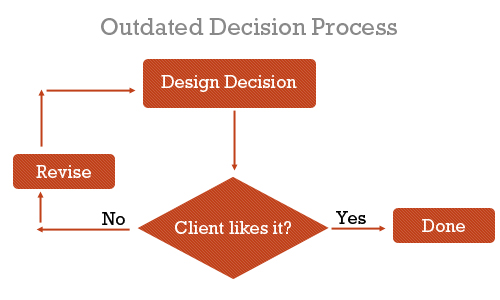
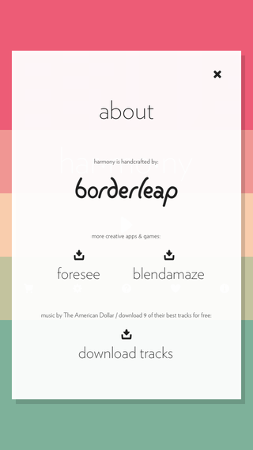
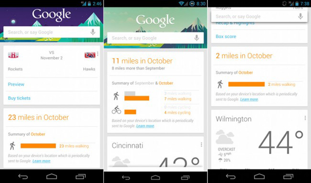
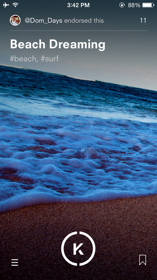
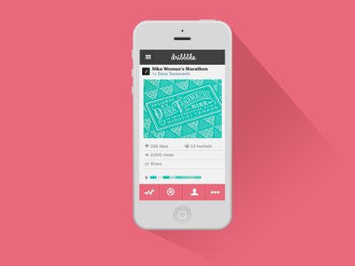
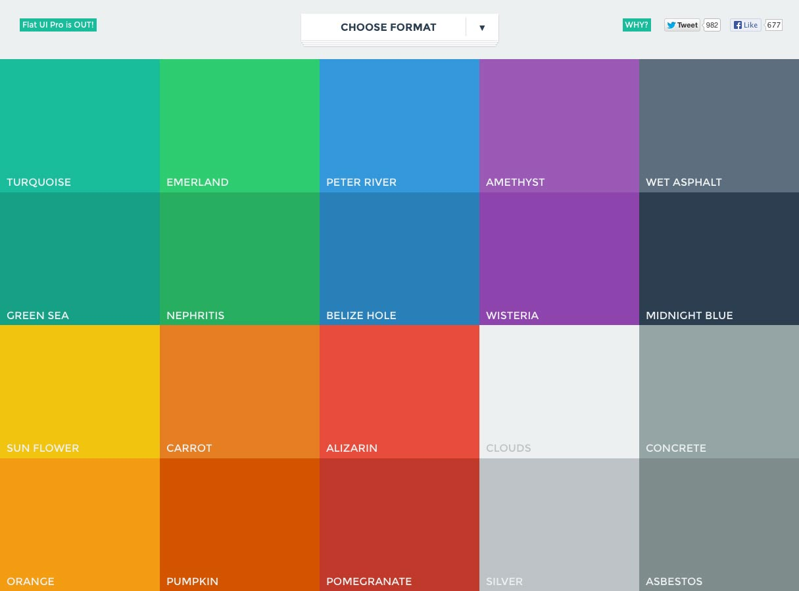

Mobile Design
Responsive UI and Design Paradigms
Created by Grant Timmerman
I’m Grant.

- CS, UW
- Open web evangelist
- I ♡ Javascript + Node
- @granttimmerman
On the Menu
- What is UX?
- Mobile constraints and capabilities
- Mobile design patterns
- UI Trends
- Build a responsive website from scratch
- Design resources!
What is UX
And why should it matter?
UX
User Experience
- Visual Design
- Information Architecture
- User Interface Design
- Interation Design
- Usability
- NOT ART
Why UX Matters
- You are probably already do it
- UX is a process. It's scientific.
- It's not hard
- It's fun and challenging
How website design used to be
But then we started developing
more complex systems
And things turned into a mess quickly
And that's not even a mobile website...
When building for mobile, there are a lot of things to keep in mind...
Mobile constraints
- Smaller display
- Different form factors
- Much longer latency
- Slow processor
- Input is cumbersome
Mobile Patterns
Lists
Modals
Awesome website
pttrns.comUI Trends
Cards
Bleeding Images
Flat UI
Pretty Fonts
- Open Sans
- Roboto
- Proxima Nova
- Gotham
- Futura
Colors
Information Architecture

Content > Navigation
Provide immediate answers rather than your site map

UI Design
The User is DrunkWhat did you hear from the vid?
- Make UI clear and obvious
- Simpler = better
- Repeat yourself to the user
Awesome places for inspiration
Interaction Design
Here are some awesome design guides
Show me the codez
CSS Media Queries
min-widthmax-width
Example
@media screen and (min-width: 600px) {
div.class {
width: 100px
}
}
@media screen and (min-width: 800px) and (max-width: 1200px) {
div.class {
width: 400px
}
}
Media queries can also be used when linking css
Now let's build something!
Resources
Inspiration
Prototyping
More Resources
That is all.
@granttimmerman